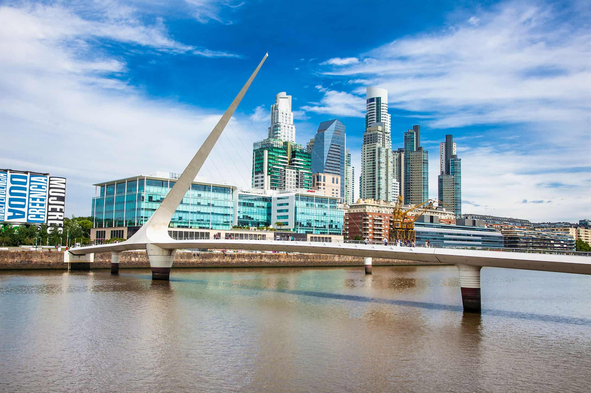
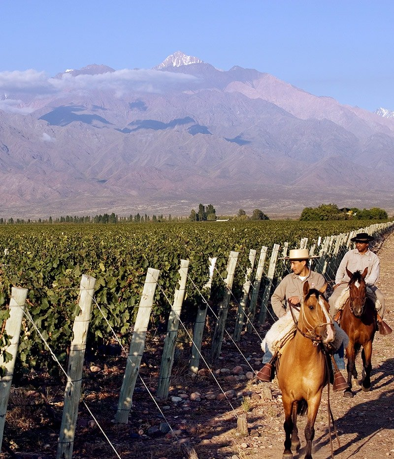
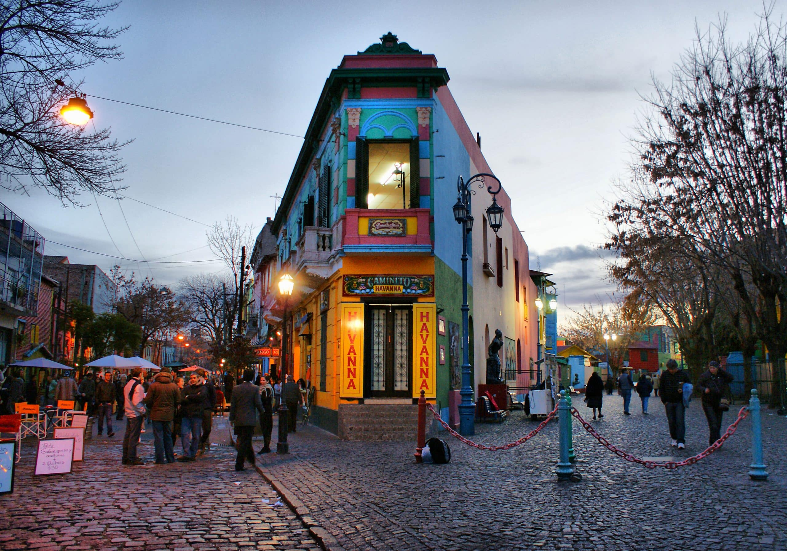
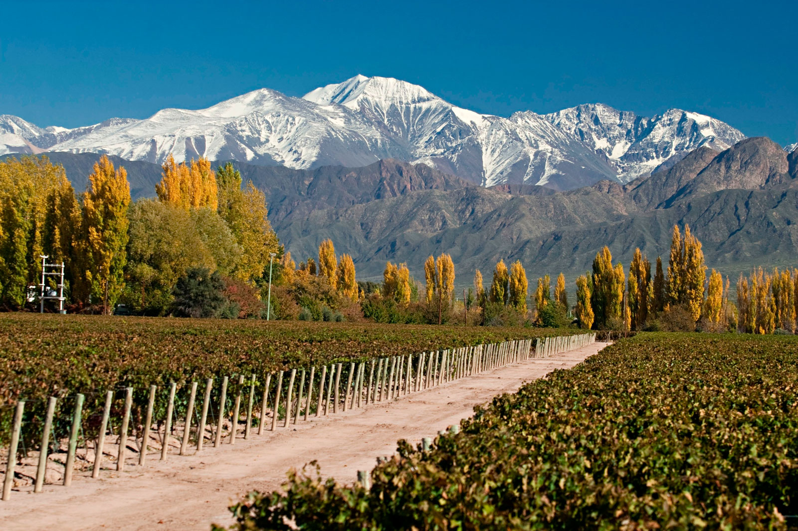
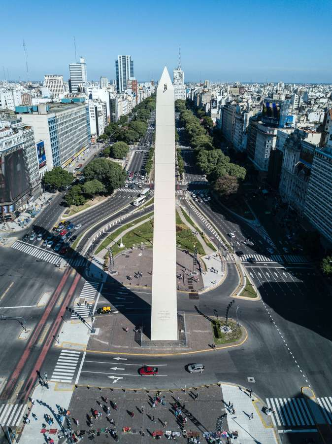
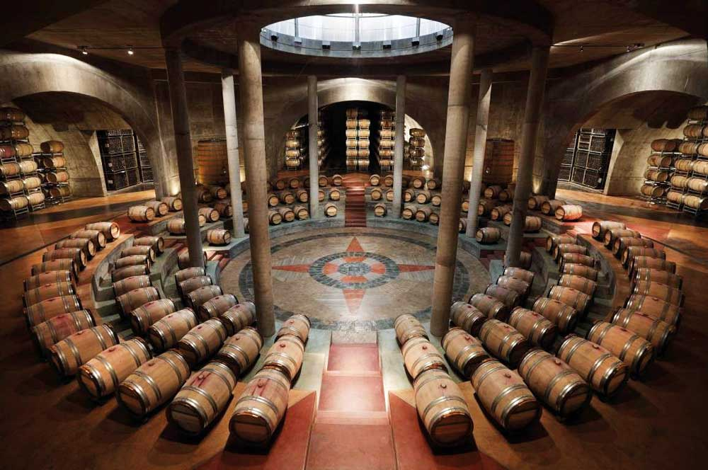
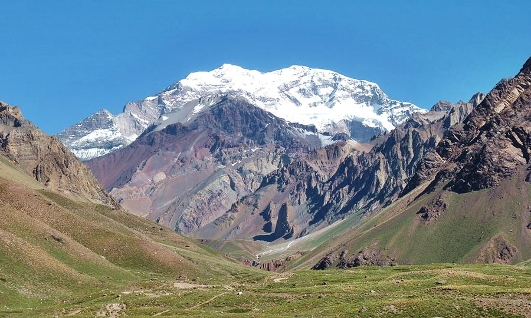
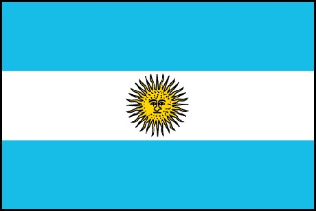

Idée voyage en petit groupe !
Argentine
Passion, Vin & Altitude
Buenos Aires · Mendoza · Andes
- Tango, asados & quartiers historiques
- Initiation tango à Buenos Aires
- Vignobles & Malbec à Mendoza
- Cerro de la Gloria & oasis andine
- Aconcagua & Pont de l'Inca
- Bus-lit de nuit Buenos Aires → Mendoza

vpdvoyages.com
Présentation
Buenos Aires & Mendoza à parts égales
Découvrez l'Argentine entre culture urbaine et grands espaces viticoles. À Buenos Aires : quartiers historiques, asados et tango. À Mendoza : vignobles Malbec, paysages andins et Aconcagua. Un circuit qui allie passion, vin et altitude.


Buenos Aires
San Telmo, Recoleta, La Boca, initiation tango, Delta du Tigre
Bus-lit Premium de nuit
Buenos Aires → Mendoza · 1 049 km · 13 h
Mendoza
Bodegas, Malbec, Cerro de la Gloria, oasis andine
Andes
Aconcagua 6 962 m, Pont de l'Inca, panoramas d'altitude
Le pays
Argentina, Argentina !
Deux mondes, un même voyage : Buenos Aires, capitale culturelle et berceau du tango. Mendoza, oasis viticole au pied des Andes, berceau du Malbec argentin. Entre les deux : une nuit à travers la Pampa.
Exemple de programme
1ère semaine – Buenos Aires
Départ France · Arrivée BsAs
J1
Arrivée & San Telmo
Change argent · San Telmo & marché · Initiation tango 2 h
J2
Microcentro
Plaza de Mayo · Café Tortoni · Edificio Barolo · Pré-milonga
J3
Recoleta
Cimetière · El Ateneo · Abasto / Gardel · Asado du soir
J4
La Boca
Caminito · Bombonera · Soirée tango-show
J5
Puerto Madero
Costanera Sur · Frégate Sarmiento · Milonga libre
J6
Delta du Tigre
Train Mitre · Bateau-bus · Canaux & nature
J7
Trajet de nuit
Journée libre BA · Départ bus-lit BsAs → Mendoza
Exemple de programme
2ème semaine – Mendoza & Andes
Retour France
J8
Arrivée Mendoza
Installation hôtel · Centre-ville · Cerro de la Gloria
J9
Route des vins
Bodega La Rural · Musée du Vin · Dégustation Malbec
J10
Vallée de Uco
Deuxième bodega · Déjeuner vignoble · Paysages viticoles
J11
Andes
Aconcagua · Pont de l'Inca · Panoramas d'altitude · Frontière Chili
J12
Mendoza ville
Parques & places · Marché · Temps libre
J13
Dernière bodega
Dégustation finale · Achats de vins · Dîner d'adieu
J14
Retour
Vol Mendoza → Buenos Aires · Vol retour France
Buenos Aires
Capitale du tango et de la culture

San Telmo
Quartier historique, marché, milongas, logement de référence
Recoleta & Abasto
Le Petit Paris, Cimetière, El Ateneo, Musée Carlos Gardel
La Boca
Caminito, Bombonera, couleurs et tango populaire
Puerto Madero
Río de la Plata, Costanera Sur, modernité
Microcentro
Plaza de Mayo, Café Tortoni, Edificio Barolo
Mendoza
Oasis viticole au pied des Andes
320 jours de soleil par an. Ville reconstruite après le séisme de 1861, Mendoza vit au rythme du vin. Vignerons français, italiens et espagnols y ont planté les cépages qui donnent les ¾ du vin argentin. La meilleure vue : le Cerro de la Gloria.

Centre & Cerro de la Gloria
Flâneries, parcs, panorama sur l'oasis
Bodega La Rural
Musée du Vin + dégustation Malbec
Vallée de Uco
Paysages viticoles d'exception
Vin & Altitude
Malbec & Aconcagua


Le Malbec argentin
Musée du Vin Bodega La Rural, dégustations guidées. Le cépage star de Mendoza, né en France mais sublimé ici.
Aconcagua & Pont de l'Inca
Plus haut sommet des Amériques (6 962 m). Le Pont de l'Inca à 2 700 m. Une journée d'altitude au cœur des Andes mendocines.
Informations pratiques
Avant le départ & sur place
Passeport & visa
Aucun visa nécessaire. Photocopie du passeport toujours en poche.
Décalage & langue
- 5 h par rapport à Paris. Espagnol.
Monnaie
Peso argentin (ARS). Ne pas changer à l'aéroport. Casas de cambio.
Pratique
Bonnes chaussures (ville + Mendoza). Prises UE 220 V.
Bon séjour en Argentine !
Passion, Vin et Altitude
Buenos Aires · Mendoza · Andes

vpdvoyages.com